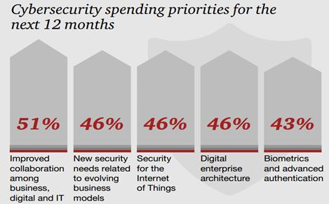
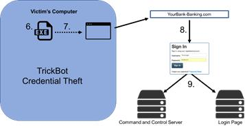
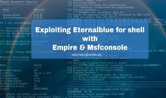
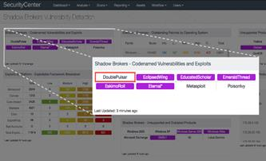
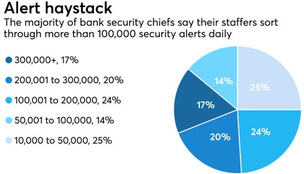
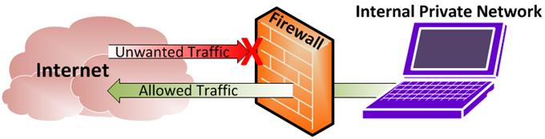
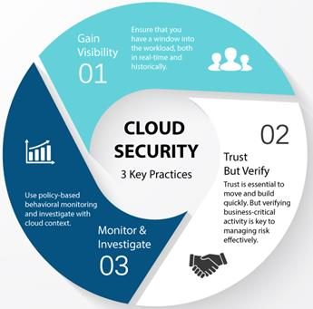
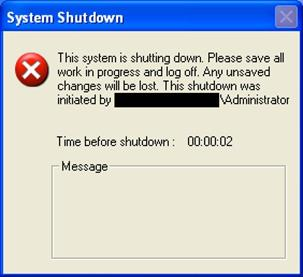
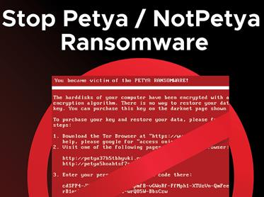
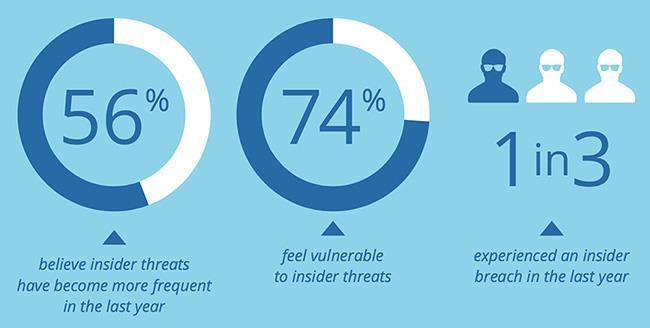

Data publicării: 12.02.2018
Autor articol: Adrian Iftene
Introducere
Dacă în 2016, un miliard de conturi de la Yahoo au fost compromise sau faptul că o mulțime de hackeri ruși au fost sponsorizați de stat (Wired Staff, 2017), pentru a influența alegerile din SUA, putem spune că în 2016 s-au văzut niște acțiuni ale hackeri la o scară foarte mare și cu amenințări fără precedent. Și dacă istoria este un ghid, anul 2017 ar trebui să meargă pe aceeași direcție.
Este greu să știm cu certitudine ce va urma, dar unele teme care au început să apară spre sfârșitul anului 2016, au continuat în 2017 și aproape sigur vor fi prezente și în anul următor. Și cu cât vom putea anticipa mai mult, cu atât mai bine ne vom putea pregăti. În Figura 1 putem vedea cum se anticipa la sfârșitul lui 2016 care vor fi prioritățile de cheltuieli pentru anul 2017.

Raportul companiei Accenture despre pericolele cibernetice din 2017
Un raport al companiei Accenture a examinat amenințările cheie care au apărut în prima jumătate a anului 2017 (Forrest, 2017). Iată cum pot rămâne în siguranță afacerile noastre. Pe măsură ce atacurile pe scară largă în domeniul cybersecurity continuă să se prolifereze la nivelul afacerilor, atacatorii își extind abordarea pentru a-și consolida impactul. În raportul companiei Accenture Security se prezintă noi metode pe care hackerii le utilizează pentru a obține acces nepermis, a fura date și a face bani.
Potrivit unui comunicat de presă care conține detaliile acestui raport, rezultatele au fost colectate de la iDefense, o parte din Accenture Security. Pe lângă creșterea numărului mare de atacuri, ele devin tot mai distructive și sunt folosite de alte entități.
Primele șase luni ale anului 2017 au înregistrat o evoluție a ransomware-ului care a produs mai multe variante virale dezlănțuite de potențiali actori sponsorizați de anumite state și de infractori cibernetici. Constatările noastre confirmă faptul că a fost stabilit un nou nivel pentru echipele de cybersecuritate din toate industriile, pentru a apăra bunurile lor în lunile următoare”, a declarat Josh Ray, managing director la Accenture Security.
Cele mai notabile 5 amenințări (Forrest, 2017)
Potrivit raportului, cele mai notabile cinci amenințări cu care se vor confrunta afacerile în 2017 sunt:
- Tactica inversă (Reverse Deception Tactics) – unelte cum ar fi codul anti-analiză, steganografia și serverele de comandă și control sunt folosite pentru a ascunde datele furate.
- Campanii sofisticate de phishing – e-mailurile de tip phishing, adesea utilizate pentru a furniza programe malware, devin din ce în ce mai sofisticate prin adăugarea unor informații specifice companiei despre facturare, logistică și multe altele.
- Utilizarea strategică a operațiunilor de (dez)informare – atacurile cibernetice și spionajul cibernetic sunt instrumente din ce în ce mai utilizate de anumite state și de anumiți actori pentru a realiza perturbări politice.
- Alternative la banii cibernetici – popularitatea lui Bitcoin îi obligă pe infractorii cibernetici să-și îmbunătățească tehnicile de spălare a banilor sau să adopte cu totul cripto-banii.
- DDoS-pentru servicii – Instrumentele ușor accesibile și ușor de folosit au făcut ca atacatorii să poată bloca ușor aceste servicii cu atacuri de tip DdoS (Distributed Denial of Service).
“În timp ce apariția noilor metode de atac cibernetic nu merge prea departe, există acțiuni imediate pe care companiile le pot lua pentru a se proteja mai bine împotriva ransomware-ului rău intenționat și pentru a reduce impactul breșelor de securitate”, a declarat Ray în comunicat.
Recomandări (Forrest, 2017)
Pentru a-și îmbunătăți protecția față de aceste amenințări, raportul Accenture a recomandat întreprinderilor să ia următoarele măsuri:
- Adoptarea unor măsuri preventive – Formarea corectă a angajaților pentru a recunoaște amenințările emergente poate ajuta o organizație să elimine potențialele probleme mai devreme și să atenueze pagubele potențiale.
- Control avansat la nivel de e-mail – Filtrele spam trebuie să fie prezente și autentificarea trebuie să fie robustă pentru a vă asigura că e-mailurile sunt protejate. Companiile ar trebui, de asemenea, să scaneze e-mailuri pentru posibile amenințări.
- Izolați-vă infrastructura – Instalați ultimele update-uri și componente de securitate pentru aplicațiile și sistemele de operare atunci când este necesar, asigurați-vă că firewall-urile și scanerele de viruși sunt configurate și verificați drepturile de administrator.
- Plan de continuitate – Un plan puternic de reziliență care include backup-uri și care este actualizat în mod regulat poate ajuta la acoperirea riscurilor pentru aplicațiile noastre împotriva plății pentru răscumpărare.
Părerea experților – Top 10 provocări de securitate pentru anul 2017
Prima jumătate a anului 2017 nu a fost chiar o plimbare în parc pentru profesioniștii din domeniul securității informatice. Unele dintre cele mai importante evenimente din acest an au fost Shadow Brokers, care au activat regulat instrumentele împotriva hacking-ului de la NSA pentru consumul public, infractorii cibernetici folosindu-se apoi de aceste jucării atractive pentru a rula amok producând WannaCry și NotPetya, iar cel mai recent HBO fiind amenințat cu cel mai tare spectacol dezvăluit mai devreme cu excepția cazului în care se plătește o răscumpărare de 6 milioane USD (Olenick, 2017).
Deci, ultimele câteva luni ale anului 2017 vor vedea un nivel continuu al activității sau se vor liniști lucrurile pe măsură ce băieții răi își iau zborul pentru sărbători? SC Media a cerut unora dintre directorii de top din acest domeniu, relativ la ce consideră ei că reprezintă cele mai mari amenințări și probleme care vor fi întâmpinate în următoarele câteva luni (Olenick, 2017). Aceasta va fi o listă care se va actualiza continuu cu noile amenințări ce vor fi adăugate în momentul în care vor apare.
1. Malware cu capabilități de vierme – Jerome Segura – Șeful echipei de analiză de malware de la Malwarebytes
Wannacry a șocat lumea prin răspândirea rapidă și acest lucru nu ar fi fost posibil fără componenta sa de vierme (vezi Figura 3 în stânga). Ne-a reamintit cât de repede se poate propaga malware-ul cu efecte devastatoare. Din păcate, alți autori de malware și-au dat seama și au încep să introducă capabilități de vierme la malware-ului produs de ei, cum ar fi recent cu troianul bancar Trickbot (vezi Figura 3 în dreapta).

2. Apariția mai multor unelte de tip Shadow Brokers – Jeff Schilling – Șeful echipei de securitate la Armor
EternalBlue și DoublePulsar componentele critice ale viermelui WannaCry sunt potențial doar vârful aisbergului a ceea ce poate proveni de la Shadow Brokers (vezi Figura 4). Aceste instrumente sofisticate, în mâinile unui adversar mai puțin sofisticat, au avut un impact global masiv. Așteptați-vă la mai mult.


3. Revenirea la elementele de bază (patch-uri, obiective, igienă) – Matt Pascucci – Manager de cybersecurity la CCSI
Aceasta este cea mai mare problemă a anului, iar malware-ul a arătat cât de ușor este să cuprindă sistemele de calcul.
4. Vulnerabilitatea rețelelor mobile – Elad Yoran – Președinte executiv la KoolSpan
Fără îndoială, una dintre cele mai importante provocări de securitate cu care ne confruntăm astăzi este legată de creștere folosirii rețelelor care transportă comunicațiile de voce și de date din lume, care sunt vulnerabile sistematic la interceptare și monitorizare (vezi Figura 5). Hackerii, organizațiile teroriste, guvernele străine și alții profită de aceste protocoale de internet și le exploatează în mod regulat de oriunde din lume.
5. Opriți copleșirea clienților cu alerte! – Ben Herzberg – Șeful departamentului de cercetare în securitate la Imperva
Controalele de securitate generează o mulțime de alerte care pot copleși cu ușurință o organizație. În organizațiile mari, cum ar fi băncile, este ceva uzual să aibă peste 100.000 de alerte de securitate pe zi (vezi statistica din Figura 6). După cum vă puteți imagina, acest lucru necesită un batalion de ingineri de securitate și analiști care să le filtreze.

6. Adaptarea firewall-ului pentru a face față noilor amenințări – Jody Brazil – co-fondator și șef de strategie de produs la FireMon
Evoluția firewall-ului nu este completă (Figura 7 descrie modul de funcționare al unui firewall). Tehnologia de rețea se schimbă rapid, iar firewall-ul va trebui să se adapteze. Cloud, SDN și containerele amenință rolul tradițional al firewall-ului. Segmentarea tradițională a rețelei este înlocuită cu rețele foarte plane – ceea ce elimină o mulțime din complexitate rețelei, dar introduce o provocare semnificativă pentru firewall-ul.

7. Monitorizarea configurațiilor și securității din Cloud – Tim Erlin, Vice Președinte, manager de produs și de strategie la Tripwire
Organizațiile continuă să adopte tehnologiile cloud cu o viteză sporită, însă securitatea informațiilor nu reușește să țină pasul. Au fost descoperite configurații greșite care au dus la scurgeri de date, dar pentru fiecare dintre acestea, sunt probabil mult mai multe care nu sunt publicate. Cu o rată rapidă de schimbări tehnologice, o variație enormă de abilități și o adoptare rapidă, este clar că monitorizarea activităților și a infrastructurii din cloud va continua să fie o provocare. În Figura 8 sunt date 3 elemente cheie care trebuiesc urmate pentru a asigura securitatea în Cloud.

8. Atacuri cu impact mare – Limor Kessem – Consilier executiv de securitate la IBM Security
Gândindu-mă la cele mai mari provocări pentru restul anului, cel care mi se pare cel mai important este “impactul” a afirmat Limor Kessem. Nimeni nu poate nega efectul distructiv al atacurilor pe care le-am întâlnit până acum, de la Shamoon v2 la WannaCry și NotPetya, lumea a observat puterea codului malware cu cel mai mare impact până în prezent (vezi detalii în Figura 9). Pentru restul anului, organizațiile nu pot ignora riscul în creștere generat de scurgerile de date extrem de avansate, care a fost folosit pe scară largă împotriva organizațiilor de toate tipurile și dimensiunile și care încă se răspândește rapid fără discriminare. Aceste atacuri ne-au arătat că nu sunt doar date despre clienți ale organizațiilor, secrete comerciale sau finanțe care sunt în joc – întregi operațiuni au fost oprite cu efecte devastatoare asupra afacerilor, angajaților și utilizatorilor finali.


9. Amenințări de tip insider – Itsik Mantin – Șeful departamentului de cercetare în securitatea datelor la Imperva
Similar cu anii precedenți, multe dintre încălcările din ultimul an nu au fost rezultatul faptului că hackerii penetrează organizația și fură date de la aceasta, ci că angajații și terții care au acces la date sensibile pentru munca lor, în unele cazuri fură datele, în alte cazuri le oferă prin trimiterea accidentală la destinatari neautorizați. Provocarea datorată pierderii neautorizate de date sensibile care implică persoane din interior și din terțe părți este dublă. Nu numai că atacatorii au mai multe informații din interior decât un atacator extern, dar din moment ce nu este implicat niciun fel de malware și nici o penetrare nu se întâmplă prin perimetrul organizației, multe dintre mecanismele de securitate comune, cum ar fi firewall-urile și antivirusurile, nu se activează și nu observă astfel de atacuri. În statistica din Figura 10, putem observa că 1 din 3 companii a fost afectată de atacuri de tip insider în anul 2017.

10. Operarea GDPR – Chris Olson – CEO la Media Trust
Regulamentul UE privind protecția datelor inaugurează o lume a schimbărilor pentru echipele de securitate ale întreprinderilor. Pe lângă activitatea de identificare și documentare a datelor și pe lângă activitatea de colectare a datelor, profesioniștii în domeniul IT și securitate își vor uni forțele cu specialiștii în confidențialitate, în risc și în conformitate pentru a operaționaliza politicile de administrare a datelor. Punerea în aplicare a mecanismelor de conformitate pentru a asigura că politicile de protecție a datelor – inclusiv datele colectate în mod involuntar de terțe părți prin intermediul operațiunilor zilnice ale site-urilor web – sunt monitorizate și verificate în mod activ vor constitui un element cheie care va fi urmărit până în mai 2018. Prin diverse programe educative avem acces la o diversitate de resurse de tip GDPR (vezi Figura 11 pentru detalii).
Concluzii
Atacurile din anul 2017, au urmat tiparele atacurilor din anul 2016 și au venit cu elemente noi bazate de multe ori pe încrederea nejustificată a celor care dețineau datele importante pentru companii. Campaniile de informare și prezența în mass-media a știrilor despre atacurile asupra instituțiilor statului sau asupra activităților privaților ne-au făcut să fim și mai atenți la ceea ce facem zilnic atât pe calculatorul de la servici, cât și acasă pe calculatorul propriu.
Elementele cheie pentru ceea ce va urma sunt legate de informarea noastră corectă, tratarea cu responsabilitate a problemelor pe care le întâmpinăm, apelarea la specialiști ori de câte ori avem neclarități asupra lucrurilor pe care le facem sau care ni se întâmplă.
Alte elemente cheie sunt legate de prevenirea acestor atacuri (instalare de antiviruși și programe anti-malware, actualizarea aplicațiilor soft pe care le folosim, etc.) și luarea tuturor măsurilor pentru a diminua efectele negative ale unor evenimente care s-ar putea întâmpla (crearea de back-up-uri pe stick-uri sau pe hard-disk-uri externe sau pe alte calculatoare din rețea).
Referințe bibliografice
- Forrest, C. (2017) Report: The top 5 cybersecurity threats of 2017. TechRepublic, Security. CBS Interactive http://www.techrepublic.com/article/report-the-top-5-cybersecurity-threats-of-2017/
- Olenick, D. (2017) Top 10 Security Challenges for 2017. SC Media. Haymarket Media, Inc http://www.scmagazine.com/top-10-security-challenges-for-2017/article/682314/
- Wired Staff. (2017) The Biggest Security Threats Coming in 2017. CNMN Collection http://www.wired.com/2017/01/biggest-security-threats-coming-2017/
- http://heimdalsecurity.com/blog/10-critical-corporate-cyber-security-risks-a-data-driven-list/
- http://www.accenture.com/ro-en/insight-cyber-threat-scape-report-2017
- http://thehackernews.com/2017/05/wannacry-ransomware-windows.html
- http://info.phishlabs.com/blog/from-macro-to-mitigation-an-analysis-of-trickbots-lifecycle
- http://www.tenable.com/blog/doublepulsar-backdoor-detection-with-nessus-and-pvs
- http://www.americanbanker.com/news/alert-there-are-too-many-cybersecurity-alerts
- http://www.tunnelsup.com/what-is-a-firewall/
- http://www.linkedin.com/pulse/cloud-security-dynamics-2017-nicholas-webb/
- http://www.theregister.co.uk/2016/12/02/accused_iranian_disk_wiper_returns_to_destroy_saudi_orgs_agencies/